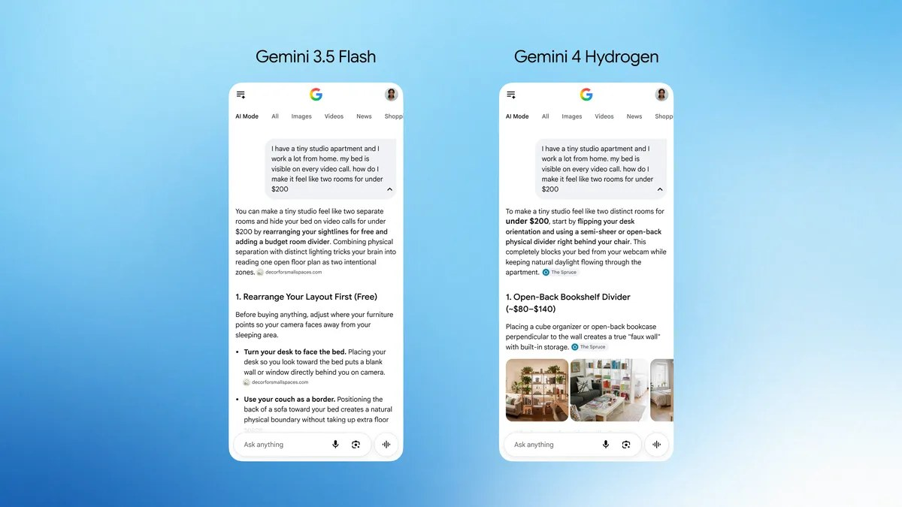

11 月 16 日这 24 小时里，三家公司的旗舰模型挤在了一起：阿里发布 Qwen4-Max，骨干参数 2.4 万亿、每 token 激活 71B；腾讯混元端出 Hy4 flash，总参数 224B、激活只要 12B；Google DeepMind 的 Philipp Schmid 把 Gemini 4 Hydrogen 的定价和选型细则摊开讲——$1.50 / $7.50 每百万输入输出 token，整个 1M 上下文窗口一个价。三条新闻同一天出现不是巧合，它们说的是同一件事：当榜单头部的差距被压到个位数，卖模型的人开始比每完成一个任务要花多少钱。
一、背景：能力天花板撞上价格地板
过去两年的叙事是「谁更聪明」。今年下半年开始，几个变量同时变了。上下文窗口从 200K 涨到 1M，已经变成旗舰标配，不再是卖点；Artificial Analysis 这类第三方榜单把顶级模型的分数挤在十几分区间里，用户很难靠分数选型；模型能干的活从「回答问题」变成「连续跑几十步工具调用」，而 agent 的成本随步数线性放大，token 效率直接等于账单。
供给端的变量方向相反。11 月 16 日，美国商务部发布临时规则，要求向全球数据中心出口 AI 芯片和服务器申请许可，堵的是「境外算力远程租用」这条绕道。算力在变贵、变难拿，模型却在同一天降价——这条剪刀差决定了接下来谁能活下来：不是参数最大的，是单位算力产出任务最多的。
二、核心：三张价目表，三种活法
Qwen4-Max：把参数堆到 2.4T，然后把成本砍到三分之一
Qwen4-Max 基于新的 Qwen4 架构，2.4T 骨干参数、每 token 激活 71B，另有 328B 的 N-gram Embedding 参数，原生视觉、100 万 token 上下文。定价 $1.50 / $4.50 每百万输入输出 token，已在阿里第一方 API 开放。
更关键的是三个成本指标。Artificial Analysis 给出的 Intelligence Index 是 43 分，比 Qwen3.8 Max（xhigh）高 9 分，落后 Kimi K3.1 Pro 3 分；但每任务成本 $3.27，约为上一代的三分之一，输出 token 用量减少 39%。同样的活，模型少说 39% 的话——这是 agent 时代最值钱的一项优化。
Hy4 flash：224B 里只激活 12B
腾讯混元的 Hy4 flash 走的是另一条路：总参数 224B（含 64B Engram 参数），每 token 只激活 12B，多模态、1M 上下文，API 价格输入 0.5 元、输出 2 元 每百万 tokens，明显低于自家 Hy4。稀疏激活的意义在于：把「日常够用」这件事的边际成本压到几乎可以忽略，适合高频、低价值的调用场景。
Gemini 4：把模型拆成规划者和执行者
Google 这边，10 日发的 Carbon 负责硬活——架构设计、调试、科学证明、安全审计，促销价 $2 / $10 到 11 月 30 日；12 日发的 Hydrogen 负责日常编码、交互应用、工具调用智能体，$1.50 / $7.50，四个思考档位（low / medium / high / xhigh）。两者共享同一个 1M token 池、同一套 Interactions API schema，缓存命中率按 Google 的说法可达 95%。

按 Schmid 的说法，两者不是替代关系而是组合关系：Carbon 做规划编排，Hydrogen 做执行和验证，一个会话里来回切。Google 把这个切换做成了产品功能 Orchestrator——在 Terminal-Bench 4.0 上，Orchestrator 用接近 Carbon 的任务成功率，平均少消耗 24% 配额、快 19%。
三、各方反应：榜单、参数和一张采购清单
Qwen4-Max 发布当天就上了 Agent Arena：基于 14.7k 真实 agent 会话，净提升 +7.5%，总榜第 14，是目前排名最高的中国模型；Alibaba 因此成为排名第一的中国实验室，总榜第 5，前面只剩 Anthropic、Google、OpenAI 和 Meta。这个排名的含金量在于它测的是多步任务完成率，不是单轮问答。
Google 给出的对照数据同样具体：Hydrogen 在默认 high 档的 Intelligence Index 是 51，超过 Argon 的 50，xhigh 档到 54；相比 Gemini 3.8 Flash，完成任务快 2.5 倍，Terminal-Bench 4.1 从 18.2% 提到 57%，编造性说法减少 5 倍以上；在 agent 任务里，越权行为下降最多 81%，偷懒少干活下降最多 79%，错位动作和走捷径的情况减少 12 倍。
「在真实的软件开发里，团队仍然依赖 Carbon、Argon 这类前沿模型做架构判断，但他们同时需要一个快速、守纪律的执行模型来写代码、跑测试、验证改动。Hydrogen 要么独立承担日常工作，要么作为多模型工作流里的高效执行引擎。」
竞争压力也很直接。Kimi K3.1 Pro 在同一张榜上还领先 Qwen4-Max 3 分，Meta 卡在 Alibaba 前面一位；而 Qwen4-Max 的定价比 Gemini 4 Carbon 的促销价还低四分之一，输出侧便宜一半以上。对中国团队来说，这份价目表基本等于一张进入海外采购清单的入场券——前提是算力拿得到。
四、深度解读：模型选择正在变成平台功能
把三家的动作放在一起看，有一个共同点：没有一家再拿「最强」当唯一卖点。Qwen 强调每任务成本降到三分之一，腾讯强调激活参数只有 12B，Google 干脆把「什么时候用哪个模型」做成了 Orchestrator 自动切换。这意味着模型选型这件事，正在从开发者的判断题变成一个平台能力——你自己写的路由逻辑，很快会被平台内置的路由吃掉。
对做应用的团队，影响是具体的。第一，prompt 工程的收益在下降，路由和缓存的收益在上升：95% 的隐式缓存命中率意味着重复上下文的成本接近零，谁把上下文组织得更可复用，谁的毛利就更高。第二，输出 token 效率成了硬指标——Qwen4-Max 少说 39% 的话就省下三分之二的钱，这比换一家更便宜的 API 更有效。第三，模型分层会变成常态：贵模型做规划、便宜模型做执行，一次性用一个大模型跑完全程的架构会显得浪费。
还有一个不太被讨论的层面：当价格战打到 $1.50 这个量级，模型本身正在变成水电煤，差异化被推到两端——上游是算力和芯片（这也是出口管制为什么要卡这么死），下游是 agent 的可靠性与安全（这也是加州总检察长这周起诉 OpenAI 的原因）。中间那层「模型能力领先半年」的窗口，正在以季度为单位关闭。
五、一句话总结
三家在同一天把参数、价格和 token 效率摆上桌，等于承认了一件事：模型竞争已经从「谁更聪明」变成「谁能让同样的钱跑完更多的活」，而这场仗的胜负手不在模型，在算力和路由。
原文：Qwen4-Max 官方发布（Qwen Blog）｜Introducing Gemini 4 Hydrogen（Google 官方博客）｜Hy4 flash（腾讯混元）｜配图：Google 官方博客